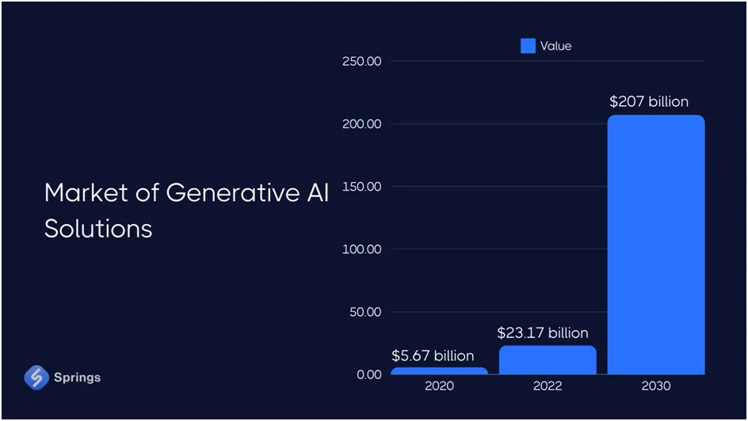
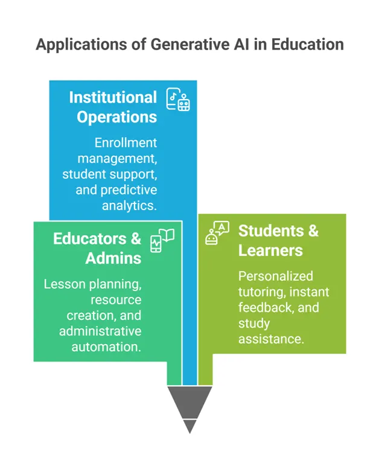
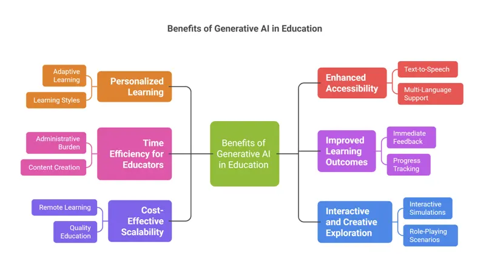
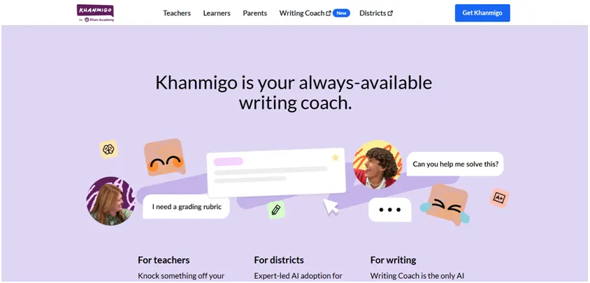
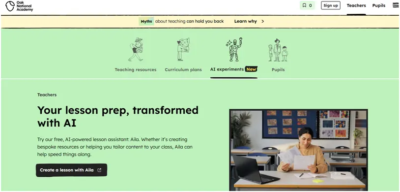
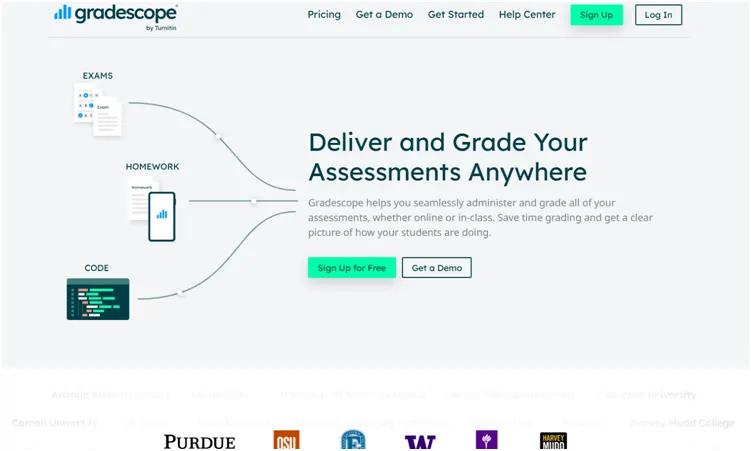
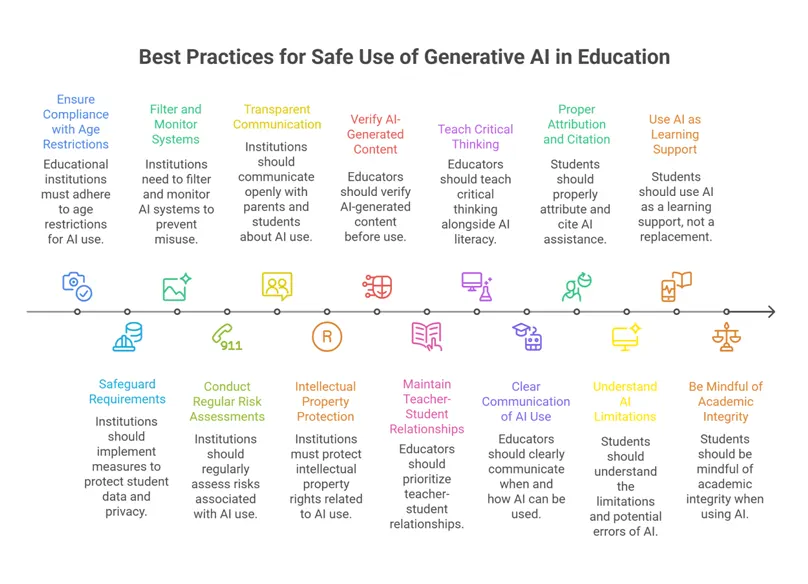
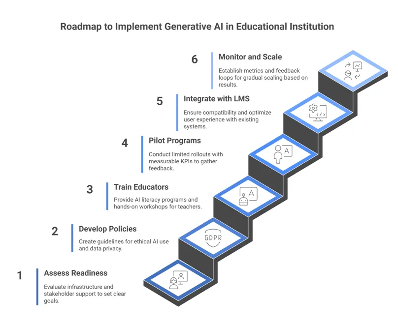

Generative AI in Education
We are so far deep into AI that, at this point, a lecturer can paste a two-line prompt into an AI tool and instantly receive a full 12-slide lesson plan. But then you pause: How will this change the way we teach, plan, and engage students?
Generative AI in education refers to AI systems capable of creating content. It includes lesson plans, quizzes, explanations, and even personalized learning activities, based on prompts.
In this article, we’ll learn more about:
- How generative AI is altering teaching and learning
- Real-world examples for educators, learners, and administrators
- Free prompts you can use and download to make your educational tasks easier
- Best practices for integrating AI without losing the human touch


If you’re a decision-maker or an educator, this is a wake-up call. Schools everywhere are experimenting with AI to save time, boost engagement, and personalize learning. The question isn’t if AI will change education—it’s how you’ll use it.
Key Highlights
Definition: Generative AI in education creates new content from scratch. Examples include creating lesson plans, quizzes, and personalized learning materials almost instantly.
Market size: $7.57 billion in 2025, projected to reach $112.30 billion by 2034.
Top benefits:
- Saves educators' time on content creation
- Personalizes learning for students
- Enhances engagement with interactive materials
Top challenges:
- Risk of inaccurate or biased content
- Data privacy and security concerns
- Resistance or learning curve among staff
Primary use cases: Lesson planning, automated assessments, student feedback, adaptive learning experiences, and curriculum design.
What is Generative AI in Education?
Generative AI is artificial intelligence that creates new content from scratch. It acts as a creative assistant that can write essays, design images, or build practice tests on demand.
Unlike traditional AI in education that follows preset rules and fixed responses, generative AI learns from massive amounts of information. It then produces original text, images, and even assessments.
These tools run on Large Language Models (LLMs). LLMs are basically massive digital brains trained on billions of text examples. They learn patterns and can generate human-like responses. ChatGPT, Google Gemini, and Microsoft Copilot are leading examples transforming classrooms right now.
Teachers can generate custom lesson plans in seconds. Students can get instant explanations tailored to their learning level.
Want to build adaptive content engines like ChatGPT, Gemini, or Claude, tuned for your curriculum?

Why Now? Market Triggers Pushing GenAI Adoption in Education

The global market for generative AI in education is expected to leap from $7.05 billion this year to $112.30 billion by 2034. That is a 41% annual growth rate.
This surge is not wishful thinking. 86% of education organizations already use the tools, and 58% of university instructors use generative AI every day.
Deloitte’s 2024 survey adds further context to this. While most people lean on AI for routine tasks such as writing emails or summarizing articles, 24% explicitly tap it for education-related work.
Now, three forces keep the GenAI momentum alive in education:
- First, cloud costs keep falling, so even small districts can experiment without new servers.
- Second, teacher shortages make any time-saving aid attractive; a prompt that drafts quiz questions in seconds is instant relief.
- Finally, students arrive expecting the same on-demand help they get from consumer apps.
When the economics, labor crunch, and user expectations line up, adoption stops being a debate and becomes the path of least resistance.

— AI Solutions Architect, Aegis Softtech
Key Applications of Generative AI in Education Across Roles
Generative AI in education touches nearly every part of education. What makes the applications so powerful is that they can adapt to different roles and needs.
Because the technology reacts to plain-language prompts, every role in a school or university can tap it without learning to code. The sections below show how the same engine looks different depending on who is sitting at the keyboard.

For Educators and Administrators
Generative AI reduces repetitive work and helps educators focus on what matters most: student success. Here are the key applications of generative AI in education, specifically for educators and administrators:
1. Lesson Planning and Curriculum Design:
AI tools can quickly outline lessons, suggest examples, and align content with academic standards.
For example, a fourth-grade teacher can type, “Create a two-week unit on sound waves that includes three hands-on labs and aligns with NGSS 4-PS4-1,” and receive a day-by-day map, list of materials, and safety notes.
The draft still needs the teacher’s touch, but the heavy lift of sequencing standards, activities, and assessments is done in seconds.
— AI Architect, Aegis Softtech
2. Creating Educational Resources:
From quizzes and worksheets to slides and visuals, GenAI helps teachers prepare classroom materials in minutes instead of hours.
3. Administrative Task Automation:
Tasks like grading, scheduling, and parent communication can be automated. Gen AI can summarize student essays, send weekly progress emails, or build class schedules based on availability.
Pro Tip:
Use cloud-based scheduling bots to optimize parent-teacher meeting slots and minimize teacher overtime in busy schools.
4. Professional Development and Training:
AI can generate custom training materials, summarize new education research, and even design interactive workshops.
5. Data Analysis for Learning Outcomes:
With data insights, educators can identify trends.
For example, you can upload last year’s interim scores and the AI returns plain-English insights. This can be something like, “Students who scored below 30 % on fractions also struggled with word problems containing two-step operations.” The report ends with suggested reteach activities that turn numbers into next steps.
Pro Tip:
Store feedback loops and flagged errors from AI tools in your LMS to continuously retrain and improve model output.
For Students and Learners
Students get personalized support with Generative AI that adapts to their learning pace and style. That said, here are some of the many applications of generative AI in education for students and learners:
1. Personalized Tutoring and Learning Paths:
AI-powered tutoring tools adjust to a learner’s pace. A math app, for example, can reword explanations or generate new examples until a student fully understands a concept. It can also create custom flashcards, quizzes, or mock exams. It can also adjust difficulty as the student progresses.
2. Instant Feedback on Assignments:
Instant feedback on assignments helps students learn from mistakes while the material is still fresh.
For example, while drafting an essay, the student pastes a paragraph and asks, “Does my evidence support my claim?” The AI highlights the sentence that drifts off-topic and suggests a tighter replacement.
3. Study Assistance and Concept Explanation:
Students can use AI chat tools to clarify difficult topics, generate practice problems, or summarize readings. It's like getting a 24/7 study buddy.
4. Language Translation and Accessibility:
AI translation and transcription tools make learning more inclusive. Non-native English speakers or students with hearing impairments can access real-time translations or captions for lectures.
For Institutional Operations
Beyond classrooms, there are several applications of generative AI in education operations as well. It helps institutions operate smarter and more efficiently. How? To start with, supporting how schools manage admissions, assisting students, and predicting academic outcomes. Here’s more on such use cases:
1. Enrollment Management:
Generative AI in education can also help institutions analyze applications, predict enrollment trends, and personalize outreach.
For example, an AI system can summarize applicant essays and forecast how many admitted students are likely to enroll. This can help schools plan resources more accurately.
2. Student Support Chatbots:
AI chatbots are now a common feature in higher education. They answer questions about schedules, financial aid, and campus services—24/7.
3. Content Localization and Accessibility:
With diverse student populations, institutions use GenAI to translate and adapt course materials for different languages and cultural contexts. The AI maintains academic terms consistency, flags culturally sensitive sections, and produces an audio file for parents who read aloud to follow along.
4. Predictive Analytics for Student Success:
AI-powered analytics can identify students at risk of falling behind by tracking attendance, grades, or participation. This allows schools to intervene early, offering extra tutoring or advising.
What are the Benefits of Generative AI in Education?

The benefits of generative AI in education go far beyond automation. By blending personalization, accessibility, and creativity, it reshapes classrooms for the digital age.
Personalized Learning and Scaffolding at Scale
Generative AI enables adaptive learning experiences that respond to each student’s pace, style, and level of understanding. Instead of one-size-fits-all lessons, AI tutors can scaffold learning step by step, offering hints, examples, or explanations as needed.
This personalized support could help over 250 million out-of-school children access tailored education worldwide.
— Lead ML Engineer, Aegis Softtech
Enhanced Accessibility and Inclusion
AI-driven text-to-speech, visual recognition, and multi-language translation tools are breaking barriers for learners everywhere. A dyslexic middle-schooler can highlight any textbook passage and hear it read aloud in his chosen accent. At the same time, a newly arrived Syrian refugee can instantly translate the same page into Arabic. Teachers report that these simple switches cut dropout risk among English-language learners by nearly half in pilot districts.
Time Efficiency for Educators
Teachers save time with AI support. Studies show a significant time reduction in lesson planning and administrative work. AI-assisted tools streamline tasks that typically consume hours of a teacher’s day. And, instead of starting from scratch, educators can draw on instant suggestions, adaptable templates, etc, that free them to focus on instructional quality. These systems can also prioritize grading queues, flag patterns in student performance, and generate differentiated resources with minimal effort.
Improved Learning Outcomes
One of the benefits of generative AI in education is that it provides instant feedback and tracks student progress continuously. Teachers can use data-driven insights to refine lessons and boost achievement. Studies already show measurable learning gains in math and computer science through AI-enhanced teaching.
Cost-Effective Scalability
AI-powered education minimizes the need for expensive physical materials and supports remote and hybrid learning. Schools can deliver quality instruction at scale, reaching more students without heavy infrastructure costs.

Interactive and Creative Exploration
Beyond textbooks, one of the most significant benefits of generative AI in education is that it brings learning to life. Students can experiment, explore, and imagine. And, learning becomes an active, engaging experience. For example, theater students can co-write one-act plays with the AI, testing dialogue in real time until the characters feel authentic. And, seventh-graders studying Spanish can drop into an AI-generated marketplace in Oaxaca. These low-stakes, high-imagination spaces turn practice into play, cementing skills.
6 Risks & Limitations of Generative AI in Education Nobody Lists
While there are several perks of applying Gen AI to the educational domain, the risks are often glossed over. Before schools rush to integrate AI tools, it’s important to understand what could go wrong and how to manage it. Check out what to look for:
Privacy and Data Security Concerns
AI systems rely on massive amounts of student data, from essays to behavioral analytics. That means higher exposure to data breaches, unauthorized access, and privacy violations. Schools must comply with GDPR, FERPA, and COPPA. These are regulations that protect student information, but many AI platforms operate in gray zones.
Without strict controls and cloud security, personal data can be stored indefinitely or used to train other models without consent.
Our developers are skilled in uninterrupted Gen AI integration, in compliance with all relevant governance frameworks, ensuring accuracy and data security.

Content Accuracy and “Hallucinations”
AI doesn’t always know what’s true. Sometimes, it confidently generates false information, a phenomenon called “hallucination.” Hence, human verification and critical thinking are still essential to prevent misinformation from influencing learning.
— Director, Data Privacy & Governance, Aegis Softtech
Algorithmic Bias and Equity Issues
Generative AI often mirrors the biases in its training data. Studies show high misclassification rates for non-native English speakers and underrepresentation of diverse voices. This can subtly shape what’s taught, and what’s left out, creating curriculum blind spots.
Pro Tip:
Audit your GenAI outputs for model bias quarterly by comparing results for different demographic data to ensure fairness and diversity.
Academic Integrity Concerns
AI tools make plagiarism and cheating easier while making detection harder. Educators are now forced to update academic policies to define what “acceptable AI use” means. The challenge here is finding a balance between AI assistance and academic honesty.
Implementation and Cost Barriers
Running AI tools isn’t cheap. From $25 per student per month to tens of thousands annually, costs can be steep. Add in teacher training and infrastructure upgrades, and under-resourced schools risk falling further behind. This is turning into a widening digital divide.
Reduced Critical Thinking and Human Interaction
When students rely too much on AI, they risk losing essential critical thinking and problem-solving skills. Also, over time, relying too much on AI can weaken teacher-student relationships and harm emotional development. This is not just a statement: 22% of students say teachers don’t understand their lives, which is an all-time low. So, the more we automate, the more we risk losing the human touch in education.
How is Generative AI Being Used in Education? Real-World Examples
Here are some generative AI in education examples that demonstrate how it’s quietly becoming the teaching assistant that never sleeps:
Example #1 - Khanmigo – AI Tutoring and Teaching Assistant

Khan Academy’s Khanmigo acts like a patient older sibling who never gets tired. It asks students Socratic questions such as, “Why do you think the fraction changed?” until the learner discovers the answer alone. Every click updates a private learning path, so the next activity targets the exact gap just revealed. While students work, the same engine drafts warm-up slides, exit tickets, and reading lists for the teacher.
Example #2 - Oak National Academy's Aila – Automated Lesson Planning

One of the best generative AI in education examples is Aila. It is an AI assistant that automates lesson planning for the UK’s Oak National Academy. Teachers can describe a topic, and Aila generates structured plans and materials that support diverse learning needs. This significantly helps in reducing educator workload.
Example #3 - Gradescope – AI Assessment and Grading

Gradescope helps educators speed grading by using AI to cluster similar answers, both handwritten and digital. It also builds dynamic rubrics, ensuring faster feedback consistently. This is a great use case for large classes.
Want to automate grading and feedback like Gradescope? We can help you build tools that integrate directly with LMSs like Canvas and Moodle.
Example #4 - Duolingo Max – AI Language Learning
Powered by GPT-4, Duolingo Max adds real-time feedback and interactive roleplay conversations. Learners can ask why an answer is wrong, get grammar explanations, and move through adaptive lessons at their own pace. New language offerings keep expanding, making learning feel more personal (and a little more fun).
4 High-Impact Generative AI Use Cases in Education (with FREE Prompts)
Below are four high-impact generative AI use cases in education, each paired with fully detailed, high-value prompt templates (with placeholders you can personalize). These are designed for real classroom use, from K-12 to higher ed.
Use Case #1: Syllabus & Lesson-Plan Generator
One of the use cases is creating a high-quality syllabus or lesson plan, which can otherwise take hours of manual effort. With structured AI prompting, educators can generate aligned, engaging, and scaffolded lesson materials in under an hour.
Free Prompts
| Goal | Prompt Template |
|---|---|
| Full Syllabus Creation | “You are an experienced curriculum designer. Create a [X-week] syllabus for a [Course Name] at [Education Level – e.g., undergraduate, high school, middle school].
Include: 1) Course overview and objectives; 2) Weekly topics with short descriptions; 3) Assigned readings or resources; 4) Weekly assignments or projects; 5) Grading breakdown; 6) Assessment philosophy; 7) Learning outcomes aligned to [Curriculum Framework or Standard – e.g., Common Core, Bloom’s Taxonomy]. Present it in a clean, table format." |
| Detailed Lesson Plan (Single Class) | “Act as an instructional coach. Build a [Duration]-minute lesson plan on [Topic] for [Grade/Subject].
Include: (a) Learning objectives linked to [Standard or Goal], (b) Warm-up activity to activate prior knowledge, (c) Direct instruction segment (core concepts), (d) Guided practice with examples, (e) Independent activity, (f) Exit ticket question, and (g) Materials needed. Add pacing guidance and estimated time for each step." |
| Assessment Blueprint | “Design 3 formative and 2 summative assessment ideas for a unit on [Topic] in [Subject/Grade].
Each should specify: purpose, question type, rubric idea, Bloom’s level, and feedback mechanism. Include both digital and paper-based options." |
Use Case #2: Coding Lab Hint-Bot
Another one of many generative AI use cases in education is AI “Hint-Bots”. It can revolutionize programming labs by giving incremental guidance—not full answers—helping students develop real problem-solving skills.
Free Prompts
| Goal | Prompt Template |
|---|---|
| Incremental Debugging Support | “Act as a coding tutor. A student is learning [Language] and has shared this code: [Paste Code]. Instead of providing the solution, give only one incremental hint that helps them think critically.
Respond in three parts: (1) Hint – a gentle clue about where to look; (2) Reflection – a question that makes the student reason about their logic; (3) Concept Link – one short sentence connecting the issue to a key concept (e.g., ‘This is related to loop termination conditions’).” |
| Concept Reinforcement | “You’re teaching [Concept – e.g., recursion, data structures, conditionals] to [Audience – e.g., first-year undergrads or 9th graders].
Explain the concept using a simple analogy (e.g., recursion as Russian nesting dolls), followed by a real-life coding example in [Language]. Then, assign a short practice task and provide one ‘common beginner mistake’ to watch out for.” |
| Personalized Debug Plan | “Given this code snippet: [Paste Code], create a step-by-step debug plan for the student.
List what they should print or test at each step to locate the problem, but don’t reveal the solution. Include a reflection question at the end to reinforce understanding.” |
Use Case #3: Multilingual Slide Translator
Another one of generative AI use cases in education stems from the need for multilingual accessibility in global classrooms. AI-powered translation and dubbing tools can make lectures instantly multilingual, improving inclusivity without requiring extra prep.
Free Prompts
| Goal | Prompt Template |
|---|---|
| Multilingual Slide Translation | “Translate this PowerPoint presentation or text content from [Source Language] to [Target Languages – e.g., Spanish, French, Mandarin].
Maintain tone, formatting, and academic precision. Simplify overly complex phrases for readability while keeping technical vocabulary accurate. Return output as two columns: Original Text and Target Language” |
| Lecture Audio Dubbing Script | “Generate an audio dubbing script for a [Duration]-minute lecture transcript on [Topic], converting it from [Source Language] to [Target Language].
Use professional academic tone, adjust idioms culturally, and ensure technical terms like [List of Key Terms] remain untranslated. Add time stamps and speaker cues every 30 seconds for easy syncing with slides.” |
| Localized Learning Resource | “Adapt this [Course/Topic] learning resource for [Target Region or Audience]. Translate it to [Language], replace region-specific examples with culturally relevant ones, and modify units or references (e.g., miles → kilometers).
Retain the educational integrity of the original material.” |
Use Case #4: Rubric & Feedback Drafts
Grading and feedback are essential but time-consuming. AI can now auto-draft rubrics, prefill grading comments, and generate personalized feedback summaries for you.
Free Prompts
| Goal | Prompt Template |
|---|---|
| Rubric Generator | “Create a grading rubric for a [Type of Assignment – e.g., research paper, coding project, group presentation] at [Education Level]. Include [Number of Criteria] such as clarity, content mastery, organization, creativity, and use of evidence.
Define four performance levels (e.g., Exemplary, Proficient, Developing, Beginning) with detailed descriptions and point ranges. Ensure criteria align with [Learning Standards or Goals].” |
| Individualized Feedback Draft | “Analyze this student submission: [Paste Student Work or Summary].
Write a feedback paragraph (~200 words) that: (1) highlights two specific strengths with evidence from their work, (2) identifies two improvement areas with actionable advice, and (3) ends with a positive closing statement encouraging growth. Keep tone supportive and professional.” |
| Batch Grading Comments | “Generate a bank of 10 reusable feedback comments for [Subject/Assignment Type] that can be personalized with student names.
Include comments for high, mid, and low performance bands. Make each comment between 30–50 words and focus on skill development, not just scores.” |
Generative AI in Higher Education vs. K-12: Key Differences
When we talk about generative AI in education, the way it’s used and even the rules around it change significantly between higher education and K-12. Here’s a quick look at how they differ:
| Aspect | Higher Education | K-12 Education |
|---|---|---|
| Learning Focus | Focuses on research, analysis, and critical thinking | Foundational learning, concept clarity |
| Autonomy | High independence; minimal supervision | Close teacher oversight |
| Academic Integrity | Strict citation and originality policies | Teaching responsible use |
| Use Cases | Research summaries, project ideation | Interactive explanations, creative writing |
| Tool Choice | Advanced AI platforms | Simplified, child-safe tools |
In short, universities use AI to amplify academic inquiry, while schools use it to enhance curiosity and comprehension safely.
Best Practices for Safe and Effective AI Use in Education
Using generative AI in education can be exciting, but doing it safely and effectively requires some thoughtful guidelines.
Here are key practices educators and students should keep in mind:

How to Implement Generative AI in Your Educational Institution?

To implement GenAI successfully in your own institution, you need a structured, step-by-step approach. Here’s how:
Step 1: Assess Readiness and Define Objectives
Start by understanding your institution’s current capabilities. Conduct an infrastructure audit: check connectivity, available devices, and whether your Learning Management System (LMS) can support AI tools. Also, set clear objectives. Are you aiming to improve student outcomes, reduce teachers’ workload, or enhance accessibility? Finally, account for your budget. AI adoption can range from low-cost pilots to enterprise-grade platforms.
Step 2: Develop AI Policies and Guidelines
Next, establish a framework for responsible AI use. Update academic integrity policies to address AI-generated work, and define acceptable use policies for staff and students. Ensure data privacy and security protocols are robust, and consider building ethical thinking to guide how AI is integrated in learning and administration. Clear guidelines prevent misuse and build trust across your community.
Step 3: Invest in Teacher Training and Development
Teachers are at the heart of successful AI adoption. Offer AI literacy programs and hands-on workshops with tools that matter in your curriculum. Encourage ongoing professional development and identify AI champions among staff who can mentor peers. Helpful resources include Google AI for Educators and Microsoft AI courses. Training not only builds competence but also confidence to experiment responsibly.
Step 4: Start with Pilot Programs
Pilot programs help test AI in a low-risk environment. Pick specific use cases or departments and run a limited rollout with measurable KPIs. Collect feedback from students and teachers and iterate.
Pro Tip:
Always run pilot AI projects in one department before school-wide rollout. Early feedback is key to refining deployment.
Step 5: Integrate with Existing Learning Management Systems
Ensure AI tools play nicely with your LMS. Check for compatibility, set up API integrations, and plan content migration strategies. Focus on user experience so teachers and students can use AI seamlessly without friction.
— Insurance Domain Expert, Aegis Softtech

Step 6: Monitor, Evaluate, and Scale
Finally, track success metrics, conduct regular safety and effectiveness audits, and gather feedback loops from students and staff. Use these insights to gradually scale AI adoption across departments, refining your approach as you grow. Over time, generative AI can become a natural part of your educational ecosystem.
What Does the Future Hold? Emerging Trends in AI-Powered Education
Tomorrow’s classrooms will feel less like rows of desks and more like tailored studios where every learner gets a unique playlist of lessons. Hyper-personalized learning journeys powered by advanced AI will watch how you click, pause, re-watch, or ask follow-up questions.
Also, integration with AR/VR for immersive learning experiences will turn flat pages into 3D labs. And, AI-powered credentials and skill verification will replace dusty transcripts. Predictive analytics for early intervention will flag when a learner is likely to disengage next week, not next semester.
Next, multimodal AI (text, voice, image, video generation) will let students ask a question out loud, receive a spoken answer, and watch an auto-generated animation, all in one flow.
Finally, AI teaching assistants becoming mainstream will handle routine work, freeing human teachers to mentor, inspire, and troubleshoot the tough stuff.
What this means for learners and educators is that:
- Students gain agency and support
- Teachers keep the heart of the classroom—relationships and creativity—front and center.
Shaping the Future of Learning, Responsibly with Aegis Softtech
Generative AI is rewriting what learning can look like. But transformation in education isn’t just about adopting technology; it’s about doing it right.
At Aegis Softtech, we help institutions turn AI potential into meaningful progress with:
- End-to-end support
- Deployment
- Long-term maintenance.
Our AI and ML teams have built custom EdTech tools, LMS integrations, and adaptive learning systems that deliver measurable outcomes.
Whether you’re exploring your first pilot or scaling across campuses, our Gen AI experts bring deep domain expertise and proven implementation success.
Frequently Asked Questions
Teachers can use structured prompts to draft syllabi, create quizzes, and generate personalized learning materials instantly. Students leverage AI for concept clarification, study assistance, and multilingual content access in real time.
Generative AI can generate lesson plans, training modules, and skill assessments, helping teachers upskill faster and adapt to evolving teaching standards with minimal manual effort.
Responsible use of generative AI in education includes anonymizing datasets, following FERPA and GDPR standards, and implementing strict governance frameworks to protect student and institutional information.
Yes, generative AI in higher education accelerates research by summarizing academic papers, generating literature reviews, and even suggesting new hypotheses or data interpretations for scholarly projects.